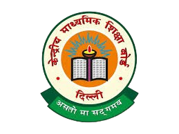

JAMNA VIDYAPEETH
CENTRAL BOARD OF
SECONDRY EDUCATION
Welcome to Jamna Vidyapeeth, a beacon of holistic education where learning transcends
traditional boundaries and evolves into an expansive journey. At Jamna Vidyapeeth, we believe that
education is not merely a pathway to knowledge but a multifaceted experience that integrates academic
brilliance, physical fitness, ethical values, and technological prowess. Our commitment is to mold
individuals who are not only knowledgeable but also strong in body, principled in character, and
proficient with modern tools. We strive to create an environment that nurtures every aspect of a
student’s development, preparing them for success in every area of life.
Sports and Physical Fitness are not just activities at Jamna Vidyapeeth; they are integral components of
our curriculum, recognizing that physical activity is crucial for building a balanced, healthy life. Our
vast and diverse sports facilities encompass everything from expansive playgrounds and athletic tracks
to specialized courts for various sports, designed to engage students in a wide range of activities that
enhance physical strength, agility, and endurance.
Our carefully structured sports programs are designed not only to promote physical well-being but also
to instill invaluable qualities such as teamwork, discipline, and leadership. Whether students are
participating in team sports or individual games, they acquire life skills that extend far beyond the
field. They learn the importance of resilience in the face of challenges, the confidence to strive for
personal excellence, and an enduring appreciation for a healthy lifestyle. With dedicated coaching and
regular competitions, students are encouraged to push their limits, fostering a spirit of camaraderie
and sportsmanship that enriches their overall educational experience.
At Jamna Vidyapeeth, our focus on moral values is deeply rooted in our philosophy, as we firmly believe
that education is incomplete without a strong ethical foundation. Character building is not merely an
academic lesson but a way of life that permeates our daily interactions and teachings. We guide our
students in cultivating virtues such as honesty, empathy, responsibility, and respect, understanding
that these qualities are essential for personal and societal growth.
Through regular interactions, value-based education, and community service projects, students experience
the joy of giving back and develop a profound understanding of the importance of integrity in all
aspects of life. Our approach to moral education ensures that each student grows into a compassionate
and respectful individual, equipped to make meaningful contributions to society. We organize workshops,
discussions, and activities that challenge students to reflect on ethical dilemmas and develop their
moral compass, preparing them to be conscientious citizens in an ever-changing world.
In an era where technology is ubiquitous, we embrace innovation as an essential skill set for our
students. At Jamna Vidyapeeth, our tech-integrated curriculum is meticulously designed to equip students
with the tools they need to excel in an increasingly digital environment. Our state-of-the-art
classrooms and labs are equipped with advanced technological resources, allowing students to explore,
create, and innovate.
From learning the fundamentals of digital literacy to engaging in advanced coding, robotics, and
problem-solving, students gain confidence and competence with technology. We understand the importance
of responsible technology use, so we teach students not only how to use modern resources effectively but
also how to navigate the ethical implications of technology in society. Through collaborative projects
and hands-on experiences, students are prepared to meet the challenges of a technology-driven world.
Together, these elements—academics, sports, moral values, and technology—form the vibrant tapestry of
the educational experience at Jamna Vidyapeeth. Here, we are not merely preparing students for exams but
for life itself. We are committed to developing future leaders who are not only physically strong and
intellectually curious but also ethically driven and socially responsible.
At Jamna Vidyapeeth, each day presents an opportunity for students to grow in mind, body, and spirit.
Our dedicated faculty and staff work tirelessly to inspire and mentor students, helping them unlock
their potential and pursue their passions. We encourage a culture of inquiry and exploration, where
students feel empowered to ask questions, seek knowledge, and challenge the status quo.
As we look to the future, we envision a generation of students who will make a positive difference in
the world. Our graduates leave Jamna Vidyapeeth not only with a wealth of knowledge but with the tools
and character needed to tackle the complexities of the modern world. They are encouraged to be lifelong
learners, adaptable to change, and equipped to contribute meaningfully to society.
In conclusion, Jamna Vidyapeeth stands as a nurturing community dedicated to the holistic development of
each student. We invite you to join us on this transformative journey, where education becomes a
lifelong adventure, preparing students to lead with integrity, compassion, and innovation. Together,
let’s build a brighter future for our children and the world.